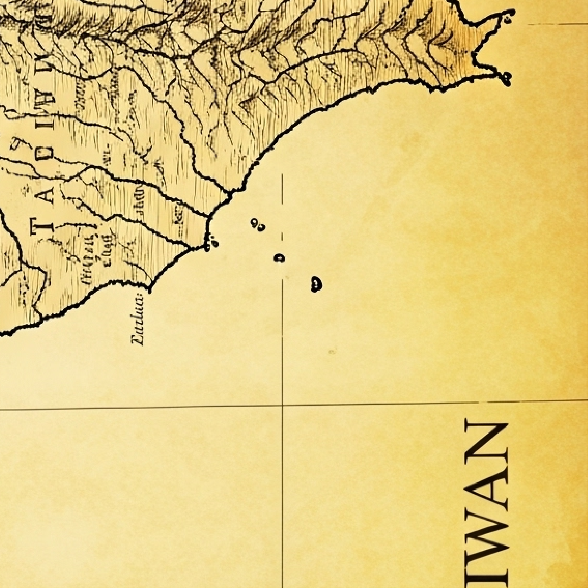

匠心地圖



匠心碎片：0 / 6 片
微笑之心

信賴指數：0 / 1500
循著靴上微笑的指引，拼湊出匠心地圖，理解「微笑之心」的真諦。
在一個充滿舊物氣息的閣樓裡，年輕的設計師阿明發現了爺爺留下的一個木箱。箱子裡沒有金銀珠寶，而是一雙作工精緻、皮革柔軟的短靴，以及一張泛黃的羊皮卷。
靴子的線條優美，皮革觸感溫潤，在靴子的內側，阿明發現烙印著一個小小的微笑標誌。他拿起那張羊皮卷，上面寫著一段謎語：
「孩子，你找到了我的『旅人之靴』。但穿上它，不代表你真正擁有它。這雙靴子承載的，是名為『信賴』的重量與一份最真誠的驕傲。它，就是『微笑之心』。循著靴上微笑的指引，去尋找它誕生的根源，去尋找更多優秀的MIT產品的吧，當你理解了『微笑之心』的真諦，這雙靴子才能真正帶你走向未來......」
請使用手機相機或任何掃碼 App，掃描店家現場的 QR Code 來參與活動。
匠心碎片：0 / 6 片
信賴指數：0 / 1500
最終目標：
當「匠心地圖」完整（集滿6片）並且「微笑之心」的信賴指數累積滿 1500 時，您就達成了最終目標！
兌換獎品：
達成目標後，您將有資格兌換我們為您準備的活動紀念獎。
如何兌換：
當您在網頁上看到勝利畫面後，即可點擊按鈕產生專屬兌換碼，並親至「大會服務台」，向工作人員出示您手機上的 QR Code 畫面，核對無誤後即可兌換。
※ 請注意：每日獎品數量有限，兌完為止，敬請把握！